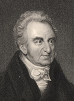
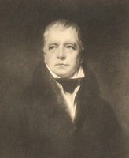

|
|
||||||||
|
|
Home | Corson Collection | Biography | Works | Image Collection | Recent Publications | Portraits | Correspondence | Forthcoming Events | Links | E-Texts | Contact John Morrison's Relations with Scott and James HoggAccording to his own 'Reminiscences', Morrison first made contact with Scott in 1803, writing to inform him of errors in Scott's notes to the ballad 'Annan Water' in Minstrelsy of the Scottish Border. The word 'frush' in the line 'O! wae betide the frush saugh wand' meant not 'fresh' or 'tough' but 'withered' or 'rotten'. Furthermore, Scott was wrong to declare that the ballad had never previously been published. Morrison enclosed a half-penny edition printed in Dumfries thirty years previously. Scott, according to Morrison, wrote back immediately with a present of the Minstrelsy, desiring his further remarks on any other subject in the volume and inviting Morrison to visit him whenever he happened to be in Edinburgh. Regrettably, neither part of this correspondence has been traced.
Scott invited Morrison to dinner where he pressed him for information on the antiquities and traditions of Galloway, on any songs or rhymes that had not been published, and on the legends surrounding the powerful Douglas family. Morrison claims to have recited a fragment of the traditional Galloway ballad 'Lochinvar' which Scott later reworked into the poem of the same name in Marmion. Scott requested that Morrison make him sketches of the castles of Galloway, in particular Caerlaverock (sometimes seen as the prototype for Ellangowan in Guy Mannering) and Threave. He nonetheless urged Morrison to make Edinburgh his base and offered to introduce him to useful contacts in the legal world.
'You have', said Morrison, 'given the lake what it has not, and taken from it something that it possesses [...] You have no line of silver sand. You have been thinking of some of the Highland lakes, where, from the decay of the granite, the water is encircled with a beautiful line of silver sand.' Nor was the water's edge treeless: 'On St Mary's also, you have some good trees, particularly one very fine old ash, that has seen the deer resting under its branches 300 years ago [...] There are also some tolerable birches on the Bowerhope side.'
James Hogg's own recollection of this episode -- published ten years before Morrison's -- tells a strikingly different tale. He claims to have been alone with Scott one morning when he first heard the description of St Mary's Loch. Scott had been keen for Hogg's opinion of its accuracy, having only seen the Loch once. 'I said there never was anything more graphic written in the world; and I still adhere to the assertion, so it was no flattery.' That night, Hogg's friends Grieve and Morrison had displayed such jealousy over Hogg's intimacy with their literary idol, that Hogg had taken them both to visit Scott the next morning. When they came to the door, Morrison said, 'For God's sake, Hogg, don't ring.' 'What for,' asked Hogg. 'Because I know there will be something so terribly gruff about him, I dare not for my soul go in.' 'You were never so far mistaken in your life', said I, 'Sir Walter's manner is just kindness personified', and rang the bell. Grieve and Morrison were then treated to a reading of the two middle cantos, 'which I am sure neither of them will ever forget' (The Domestic Manners and Private Life of Sir Walter Scott, pp. 96-97). No mention is made of any discussion of Scott's description of St Mary's Loch on this occasion. These differing versions hint at the tempestuous nature of the relationship between Morrison and Hogg. Morrison's 1844 account is clearly designed to refute Hogg's, insisting upon his prior acquaintance with Scott, doing away with Hogg's role as a chaperon, and stressing Scott's respect for his judgement. At the same time, the defensive tone of Hogg's original suggests that he too wishes to put right an earlier account of the meeting, perhaps one circulated orally by Morrison. In the absence of further testimony (from Scott or Grieve) or corroborating evidence, there is little possibility of judging between the two versions. Certainly, Hogg's description of Morrison cowering at Scott's door sits ill with Morrison's notoriously brazen self-confidence that he displays so clearly in his 'Reminiscences'. The dislike of profuse praise and the modest view of his own poetical talents that Scott reveals in Morrison's account are both entirely in character. (It is surely legitimate, though, to read wry amusement at Morrison's pedantry into Scott's purported reaction to his critique.) Hogg depicts Morrison on a number of occasions in his verse. In 1810, he addressed a rhymed epistle to Morrison who was then engaged on a surveying project with Telford in North Wales (printed in full in the preface to Morrison's 'Reminiscences'). He enquires,
Hogg goes on to beg,
The epistle is accompanied by a mock epitaph:
In his recent critical edition of The Queen's Wake (see Bibliography), Douglas Mack suggests that the reference to 'Fair Margaret' may hint at rivalry for the affections of Margaret Beattie, Hogg's housekeeper (and mother of his illegitimate daughter Elizabeth) (p. 411n). Following a suggestion from Gillian Hughes, he notes that it might also reflect irritation at Morrison's 'flattering behaviour' to Hogg's bride-to-be Margaret Phillips. Morrison appears, unsurprisingly, to have been stung by his depiction in The Queen's Wake. Mack argues that well be the author of an unpublished anonymous satire, The Hoggiad, composed in response to The Queen's Wake (mentioned in a letter from Hogg to Scott of 3 April 1813, NLS MS 3884/122-23). In all events, relations have clearly worsened by 1819, when Hogg inserts a revised description of the 'fifth bard' in the 6th edition of The Queen's Wake. Two stanzas no longer suffice to contain Hogg's vitriol. The second stanza of the 1813 edition is now divided into two to accommodate the new material (marked in bold):
Although Hogg is now best known his for novel The Private Memoirs and Confessions of a Justified Sinner (1824), The Queen's Wake was considered his masterpiece by his contemporaries, and continued to be widely read throughout the nineteenth century. Those few nineteenth-century historians or memoirists who recall Morrison invariably cite the description of the 'fifth bard' from the 1819 edition of The Queen's Wake, in a manner that presupposes familiarity with Hogg's poem. Morrison's 'Reminiscences' have been blamed for promoting the image of Hogg as a financial simpleton incapable of managing his own affairs. It is important to recall, however, that Morrison was evoking a figure who must appeared to have branded him for all posterity. He doubtless felt he was paying him back in his own coin. Scott, conversely, remained on good terms with Morrison and commissioned a number of artworks from him. When Morrison was to survey a railroad from Glasgow to Berwick, Scott asked him to sketch castles and collect ballads in the Upper Ward of Clydesdale. Again, when in 1809-10, Telford engaged Morrison to survey a road in Wales, Scott asked him to sketch castles and glens and collection translations of ballads. He also facilitated the publication by Constable of a volume containing stone engravings made by Morrison from his own sketches of Hermitage, Caerlaverock, Threave, Bruce, Duart, and Ellandonan castles. Copies of these engravings remain on display in Abbotsford, along with a set of pen-and-ink drawings of Galloway landmarks that James B. Corson has attributed to Morrison. Scott also helped Morrison find work as a portrait-painter, while feeling that Morrison would be wiser not to abandon surveying entirely. He commissioned paintings of his uncle Thomas Scott, of James Veitch, Archibald Constable, the Ballantynes, and members of the Abbotsford household such as Allister Dhu and Tom Purdie. Indeed, according to Morrison, he wished him to produce a gallery of the portraits of all of his friends. Little, if any, of Morrison's portrait work appears, though, to have survived (or, perhaps more accurately, to have been identified). When Morrison set out for Liverpool in his capacity as portrait-painter, however, Scott sent a somewhat double-edged letter of introduction to the historian William Roscoe (portrayed, right) which was published in the introduction to Morrison's 'Reminiscences'. He describes Morrison as 'a very worthy, as well as a very clever man' but opines that 'though no judge of the art, I think he has mistaken his talents; for, though he sketches remarkably well in outline, especially our mountain scenery, and although he was bred to the art, yet so long an interval has passed, that I should doubt his ever acquiring a facility in colouring'. He therefore hope that something may come up 'in a city where science is so much in request, to engage him more profitably to himself, and more usefully to others, in the way of his original profession as an engineer, in which he is really excellent'. Scott 'should be sincerely glad, however, that he throve in some way or other, as he is a most excellent person in disposition and private conduct, an enthusiast in literature, and a shrewd entertaining companion in society.' Roscoe returned Scott's introductory letter to Morrison, shrewdly suggesting that it would be of more value to him than to anyone else. Whatever his own short-comings as a portraitist, Morrison was instrumental in arranging for one of the finest portraits of Scott to be made. In 1823, he undertook to persuade Scott to sit for Sir Henry Raeburn, on condition that he be permitted to attend the sessions and copy the work as it progressed. Raeburn had already painted a likeness of Scott in 1808, but felt that it had 'a heavy look'. Scott had initially shared Raeburn's reservations but had come to favour the 1808 portrait over the more romanticised images produced by subsequent painters. As such, he soon overcame his aversion to sitting for yet another portrait ('Not only myself', he told Morrison, 'but my very dog growls when he observes a painter preparing his palette.') Scott was, in Morrison's account, highly pleased with the result, declaring to Raeburn: 'I wish none but your portraits of me were in existence.' Morrison, usually so sparing of praise -- elsewhere in his 'Reminiscences' he derides Wilkie's and Lawrence's portraits of Scott -- concurs that it is 'by far, the best likeness that has ever been painted'. (Click here for a page on Raeburn's 1823 portraits of Scott.) Morrison's published recollections break off abruptly after he recalls meeting a 'care-worn' Scott in the process of writing his Life of Napoleon, a work which evidently 'sat heavy on his spirits'. Last updated: 05-Nov-2004
|
|||||||


 Although
Hogg appears to present a flattering portrait, there may well be
a double meaning in 'lies', recalling the Epistle's allusion to
Morrison's 'hyperbolical smile'. By 1813, Hogg seems to have tired
of Morrison's 'follies' and offers an unambiguously hostile depiction
in The Queen's Wake, debunking the gifts that he had earlier
professed to admire (albeit with a trace of irony). In
this highly popular poem, Hogg portrays his poetic peers in the
guise of bards participating in a poetic competition to mark the
return of Mary Queen of Scots to her homeland (portrayed left by
Keeley Halswelle). Morrison is portrayed as follows:
Although
Hogg appears to present a flattering portrait, there may well be
a double meaning in 'lies', recalling the Epistle's allusion to
Morrison's 'hyperbolical smile'. By 1813, Hogg seems to have tired
of Morrison's 'follies' and offers an unambiguously hostile depiction
in The Queen's Wake, debunking the gifts that he had earlier
professed to admire (albeit with a trace of irony). In
this highly popular poem, Hogg portrays his poetic peers in the
guise of bards participating in a poetic competition to mark the
return of Mary Queen of Scots to her homeland (portrayed left by
Keeley Halswelle). Morrison is portrayed as follows: